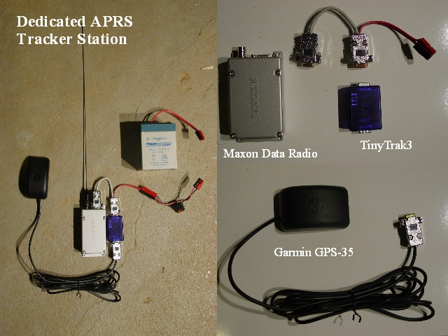

Notes:
This is my second try at an APRS tracker, this time using dedicated components, The TNC is again the TinyTrak, the GPS is Garmin's GPS-35 which is a GPS receiver without a screen or buttons. The radio is a Maxon data radio which can be programmed to run in the 2meter amateur radio band. This tracker with run for about 24 hours on a 5 amp hour 12 volt gel cell battery. In use, the TinyTrakIII needs to be shielded by being wrapped in aluminum foil, The maxon data radio can be programmed to transmit at either 1 watt or 5 watts. The maxon data radio cannot handle a duty cycle much greater than one transmission every 5 minutes at 5 watts.